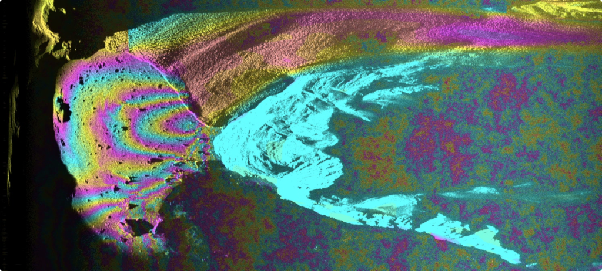

At the annual meeting of the Program for Arctic Regional Climate Assessment (PARCA) hosted at the NASA Goddard Space Flight Center, I'll be presenting new data that allow a more complete view of the iceberg calving process. These data include ground-based radar interferometry, seismic, and ocean current observations that reveal how major calving events proceed over 10s of hours before, during and after an iceberg detaches from the terminus. This PARCA presentation will be the first view of these data, collected during the 2014 summer at the terminus of Rink Isbrae in West Greenland. Further analyses of these data, taken together, will contribute to our understand of how and why calving occurs at Greenland's largest outlet glaciers, and what the effects of these events are on the glaciers and adjacent ocean.
The PARCA meeting takes place on January 27th in Greenbelt, Maryland. You can read more about the project that supported collection of this data here.

